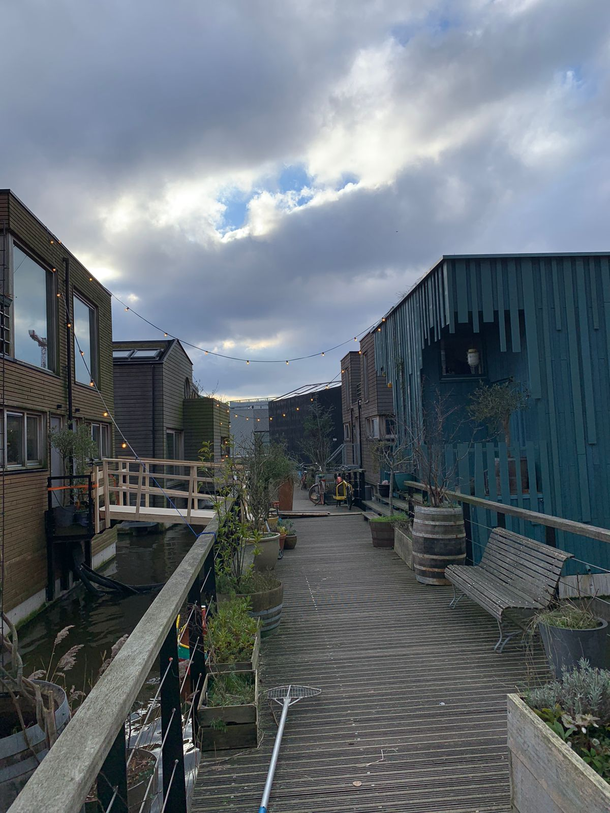
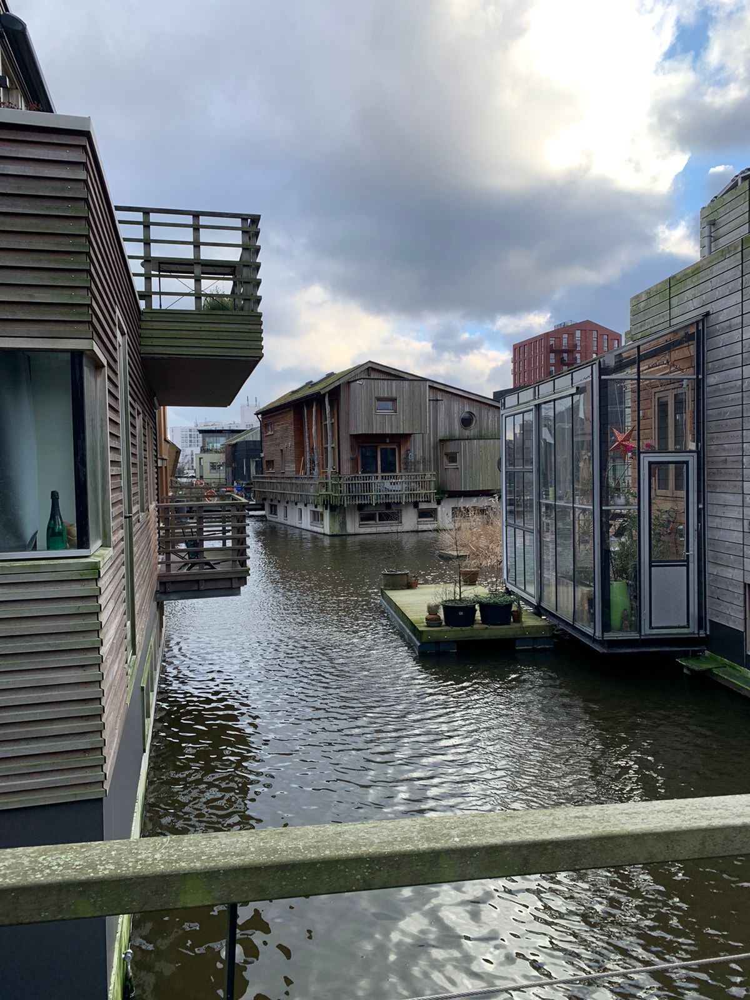
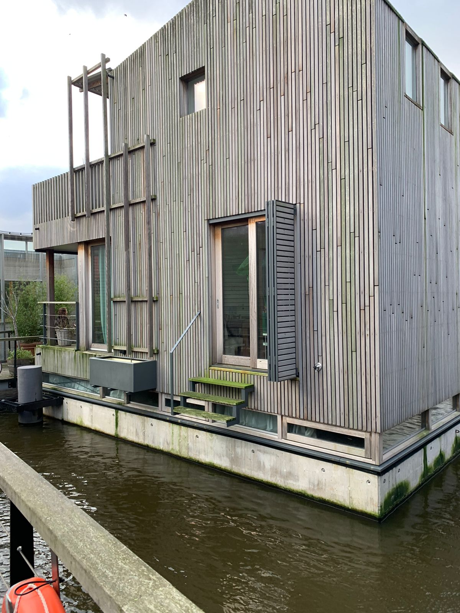

H2OMES, HOE ZIET HET ERUIT?
ELK HUISJE IS ANDERS
Hoewel het leven op het water centraal staat, wordt de omgeving aan boord verrijkt met een weelderige groenheid. Ontdek hoe we op Schoonschip groene initiatieven omarmen en een duurzame, natuurlijke leefomgeving creëren door een bezoek te brengen aan onze Duurzaam-pagina. Laat je inspireren door de harmonie tussen diversiteit en duurzaamheid op Schoonschip!
AAN EN OP HET WATER.
Het leuke aan dit stukje van de woonwijk H2Omes is dat bijna elk huisje heeft voor een stijger, of dat er een kleine uitbouw aan vast zit. Zoals hierboven heb je dan een kleine kas aan je huis. Hoe leuk is dat!
BOOTJE VAREN??
Alle huisjes zijn gemaakt van duurzaam materiaal, en ook niet huisje. eerder had ik het al over dat sommige huisjes een stijger of een opstap plek hebben voor eventuele boten. Dat is hier heel goed te zien.